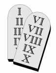
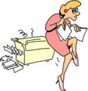
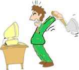
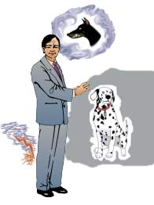
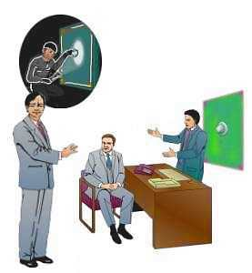

| Ethics Dictionary | Conditions Formulas | PTS Glossary | FAQs |
|
|
| Ethics Dictionary | Conditions Formulas | PTS Glossary | FAQs | |
Note: This chapter is from 'The Road to Clear", Level 2.
What is a withhold?
Note: This chapter from ST-2 is included to explain the mechanism of Withholds. Only an ST-2 auditor would pull overts and withholds as auditing. An Ethics Officer is routinely dealing with people with Withholds and needs to know what he is dealing with. Without being an ST-2 auditor he still has the tool of O/W write-up as described under Ethics Tools.
Since level two is dedicated to the auditing of overts and withholds we better get a good understanding of what it is. Let us start with going over the two most important definitions, (a) overts and (b) withholds. An overt is a bad deed; a stupid act - something you know you shouldn't have done; or it can be something you should have done but didn't. The withhold is the attempt to keep it secret or hidden. Let us be a little more formal:
Overt act 1. A harmful act done in an effort to resolve a problem. 2. that thing which you aren't willing to have happen to yourself. 3. An overt act is not just a bad deed or hurting somebody. An overt act can be an act of omission or commission. What makes it an overt is, that it does the least good for the least number of dynamics or the most harm to the greatest number of dynamics. 4. A harmful act.
A withhold is an unspoken, hidden break of a moral code by which the person was bound. It is something that a person believes, that if revealed, will endanger his self-preservation, status, reputation or survival. It is the phenomenon which comes after the overt, when the overt act is being kept secret, hidden or withheld.
 |
The 10
Commandments |
Let us take a closer look of what a withhold is. In a withhold there is a
no-action after the fact of doing something that was a violation or break of
good conduct (a moral code). The moral code is an agreement (written or
unwritten) that the individual is supposed to keep to be a good group member. It
is formulated to guarantee the unity and survival of that group.
 |
She ruined
the copier, but |
So the W/H is different from the overt as it comes later. It is a no-action or a no-motion after a doingness; it tends to hang up in time and float along in time. It can be this big secret the person shouldn't tell anybody but which is always on his mind. The action content he doesn't want known, makes it compelling, dramatic and alive and difficult to forget.
Example: Consider the mindset of a soldier, who has killed in battle. He has these violent incidents he has to struggle with. When he comes back home, he decides he shouldn't tell anyone. After all it's a breach of social conduct - and of the 10 Commandments. The violence of the battle keeps being replayed in his mind. He tries to 'forget about it' (Not-is it). He never speaks about it; that is the 'no action after the fact of an action'. He has these violent pictures and experiences, which he is trying to stop and Not-is. You see it has an element of a problem too. He wants to stop it from replaying itself. The incident won't comply; it is replayed by his Reactive Mind over an over. The impulse to withhold is smack up against the impulse of the Reactive Mind to replay it all the time.
The Reactive Mind could be viewed as the collection of all the persons withholds. They have been piled up over time in the persons dealings and relationships with groups and people. It causes the person to withdraw and individuate. At different points it has caused him to break off his relationships and associations. This can happen as a result of him feeling more and more distant from and different from the group. He has individuated. This usually happens gradually long before he leaves or breaks off. It is still with him long after the break; he simply hasn't really left the experience behind. The action content of these withholds tend to be dramatized by the pc at the same time he is trying to forget about them. This situation leads to all kinds of dramatizations and irrational behavior. Since the overt can be viewed as an action he committed in order to solve a problem he now uses the content of the withholds to 'solve' problems and commit new overts that then has to be withheld.
Example: Let's say an individual we can call Joe, in the past belonged to the Holy Crusaders. One of the mores (rules or 'now I am supposed to's) of the Holy Crusaders was, that all non-believers who wouldn't accept their faith should be destroyed and killed. There is a neighboring tribe, which has no intent to accept their faith. This tribe had its own beliefs which they worshipped and were comfortable with. So the Holy Crusaders decided to take them head on and attack them in battle. The Holy Crusaders attacked with ferocity. They felt united as a group and by the good fight. It was a bloody battle and many of the non-believers got killed. However Joe saw a helpless little girl as he was searching a house. He did not kill this child; but instead got her out of harms way and gave her food and drink and left her behind, running out of the house yelling, "I have taken care of things here!" and giving the impression that there were no survivors in there.
 |
Joe the |
After the glorious battle, which the Holy Crusaders had won, there was a great victory party. Each of the warriors would step forward and tell their story how they had fought and killed their enemies.
Joe withheld from the group that he had not only failed to kill an enemy, but had actually saved the life of one. Thus we have the 'no-action' of the withhold after the action of saving the little girl's life. This was of course a clear breach of the mores or 'now I am supposed to' of a Holy Crusader in battle.
Because of this breach of their code and other similar breaches, Joe finally individuated from the group of Holy Crusaders. He left.
 |
Joe as member of "Save the |
At some point later in time we find our individual as a member of another group. Joe had experienced a complete change of heart and attitude and is now a member of 'Save the Innocent Children Society'. Here the mores dictates to show great love, respect and kindness for children and for all of humanity. The tone of the group is compassionate and loving. But when our man runs into people that show indifference or cruelty towards children, and when he runs into difficulties with his own group members he would display a temper. Joe will reactively try to solve his problems in and around 'Save the Innocent Children Society' with his old methods and mores he adopted in the Holy Crusaders. This leads to numerous incidents and clashes and it leads to a string of breaches of the mores and rules for good conduct of the 'Save the Innocent Children Society'. He withdraws more and more from the group and finally Joe "looses it" and smash a computer in the office. Joe has to leave this group.
 |
Joe
finally looses it and smashes a |
|
Joe the |
 |
Our individual now becomes a passport inspector at the customs department. Joe inspects travelers and passports in an airport. His job is to do it by the book. The mores of his new group dictates him to show no emotion, be polite and formal. This causes him many difficulties as he still carries his mixed bag of values from the earlier groups along with him. In some situations he is too forgiving and overbearing, especially when it comes to children. In other situations Joe can't help but feel strong emotions and prejudices, especially when he sees people of obviously another faith than his own, come up to his desk. His old mores are secretly acted upon in certain situations and gives him a new set of withholds and problems; because, what at one point was right obviously is wrong in his present job and functions. It is not what a passport inspector is supposed to do.
So you see how our individual carries these old methods and mores along with him. They got frozen and recorded in the Bank thanks to the breaches he committed in the past. The action of the overt and the inaction of the withhold make them float in time and in a way be ever present. The action of the overt and the motionless nature of the withhold locks up against each other. We have an attempt on the part of the individual to Not-is their existence, simply get rid of them by pretending it never happened. That is a Not-is.
Axiom 11 defines Not-isnes as: "the effort to handle Is-ness by reducing its condition through the use of force. It is an apparency and cannot entirely vanquish an Is-ness."
AXIOM 18 pretty much tells the story: "The Static (the Thetan or individual), in practicing Not-is'ness, brings about the persistence of unwanted existences, and so bring about unreality, which includes forgetfulness, unconsciousness, and other undesirable states."
Even though Joe is trying hard to forget the original incidents, they are still with him. Reactively he is living by these rules and mores and following them although they no longer fit the group or the situation he is in.
It is important to realize, that withholds are always linked to a moral code, a code of behavior and a set of 'now I am supposed to's. It starts with agreeing to such rules and then by accident or overtly break them. When such a breach occurs the individual feels compelled to withhold it from the other group members out of self preservation, fear of loosing status and possible punishment. As this goes on over time the person is less and less active in the group. He becomes a passive member and finally not a member at all. This is what we mean by individuation. The individual becomes more and more separated out or individuated from the group.
Processing Withholds
When we start to audit this individual we
find he has all these withholds and overts against the Holy Crusaders. He has a
new set of withholds against the 'Save the Innocent Children Society' ; and then
another type against his former employer, the customs department. In auditing
you have to recognize, that it is three separate sets or types of withholds.
Each type can only be fully understood on the basis of the moral code and mores
of the group he committed them against. By pulling his overts against the Holy
Crusaders he will eventually be able to leave this group entirely and leave the
values he adopted behind. The same is true for the two other groups. In
repetitive processing you would run a process like "What have you done to
the Holy Crusaders?", "What have you withheld from the Holy
Crusaders?" You would simply keep this up until you get F/N VGI and
cognition as on any other Major Action.
In Confessional type of approach, you would start with a prepared form or list of possible overts. This is the trick. Whoever makes the list should have an intimate knowledge of that group and its mores. It is no big mystery what type of rules will cause what type of overts and withholds. Most rules begin with "You shall not..." Doing it anyway is of course a breach. In Confessionals the trick is to get all of the overts available and get all of each overt/withhold. You don't want wild stories about "I have done all these terrible things" (unless they are true). Some pc's will tend to dramatize it and make it much worse, they like to tell dramatic stories. Other pc's will tend to try to minimize their bad deeds to "It's really nothing, but..."
Axiom 38 states (in part):
"1. Truth is the exact consideration"
"2. Truth is the exact time, place, form and event."
"Thus we see that failure to discover Truth brings about stupidity."
"Thus we see that the discovery of Truth would bring about an As-is-ness by actual experiment."
The 'Exact truth' per this Axiom is what we really want, because that is what brings about As-is'ness. You could say a good Confessional is the 'Actual experiment', that brings about As-is'ness and the pc can again feel free about that group and finally leave it and its values behind. He does not anymore have to dramatize withholds connected with that group. In relation to one's present group, it enables the pc to again fully participate and enjoy his involvement.
The Bank and old Survival Patterns
Any withhold as described in the example
and the general way the Reactive Mind operates has something important in
common.
 |
Engram:
A bite from a Doberman dog |
You could say the Bank is a collection of old survival patterns. Originally it seems designed to be a safety mechanism. By recording into the Reactive Mind situations that went wrong an automatic control system was built up. If the organism and individual went partly unconscious the Reactive Bank with all these automatic warnings against danger in place, would take over and dictate the course of action. This mechanism seems to work on an animal level. Unfortunately it never worked very well in a human civilization based on language and subtle differences: the Reactive Mind is not able to see differences and nuances of situations. We have the A=A=A=A type of thinking dictated by the Bank.
A withhold has a number of survival considerations in it. The original overt was done based on old survival patterns (the mores of past groups) or it was done in an attempt to solve a problem for the individual. That is old survival - just like the Bank. The withholding part is done due to the present environment and group and its mores of "Don't do it!". That's survival too; new survival you could say. So you have the Reactive Bank which is full of unconscious concerns about survival based on Engrams and automatic recordings.
The withhold is the individual doing something similar, but based on analytical experiences. But this activates the Reactive Bank and makes the withhold the link between the pc and his Bank.
 |
Withhold:
Having the withhold of breaking the |
The individual withholds the overts he has done against the group and its moral code in order to avoid punishment or loss of status. This he does in an effort to preserve or enhance his own survival. As it develops, he withholds himself more and more from the group and finally leaves in an effort not to commit any further overts or to protect himself. All this is under the headline of 'Survival solutions'. This ties in closely with the rest of the content of the Reactive Mind - Engrams, Secondaries and so on. The 'lesson' of Engrams is to avoid future danger situations. You don't want to get into a situation that can lead to injury or death. So the Engrams dictate these 'do's and don't on the basis of how dangerous they are recorded to be to the organism.
So the withhold is the thing that ties the pc to
his Reactive Mind by A=A=A=A and restimulation. The withhold 'does what the
person's Reactive Mind does'. They operate in the same way and becomes the
bridge between the pc and his Reactive Mind.
Pulling Withholds
The pulling of withholds and overts then is an important step towards
getting the pc to take control of his Reactive Mind. The more withholds he gives
up and inspects in session, the more old survival mechanisms of the Reactive
Mind is 'destroyed' or As-is'ed.
Pulling O/Ws also breaks the vicious cycle of having to commit new overts and withholds. The withhold creates ignorance on the part of others and it results in ignorance to the person himself. So you could see processing of withholds as a step in direction of knowingness and increased awareness.
When processing withholds you are attacking the whole basis of the Reactive Mind. Done under Auditors Code it is an activity the auditor should do earnestly and effectively. The equation of Auditor + PC is greater than the pc's Bank should be at work. It is known as 'Auditors Trust'. The pc is assisted to be able to overpower his Reactive Mind and get the exact content of the withhold. You may run into all kinds of objections stemming from the Reactive Mind itself, but if you keep your 'Auditors Trust' clean you will finally get it. To let the Reactive Mind win would consist of another overt.
 |
 |
|
Wrong way - accusative |
Right way - the session is for the pc. |
In Confessional auditing you should get your answers without developing Meter dependency. This raises the confidence between auditor and pc and a spirit of working together in overpowering the Reactive Mind. The auditor should only use the Meter when needed to assist the pc in getting all there is to get.
Happy hunting!
A=A=A=A: Anything equals anything equals anything. This is the way the Reactive Mind thinks, irrationally identifying thoughts, people, objects, experiences, statements, etc., with one another where little or no similarity actually exists. Example: Mr. X looks at a horse, knows it's a house, knows it's a school teacher, so when he sees a horse he is respectful. This is the behavior of the Reactive Mind. Everything is identified with everything on a certain subject.
|
|
|
|
|